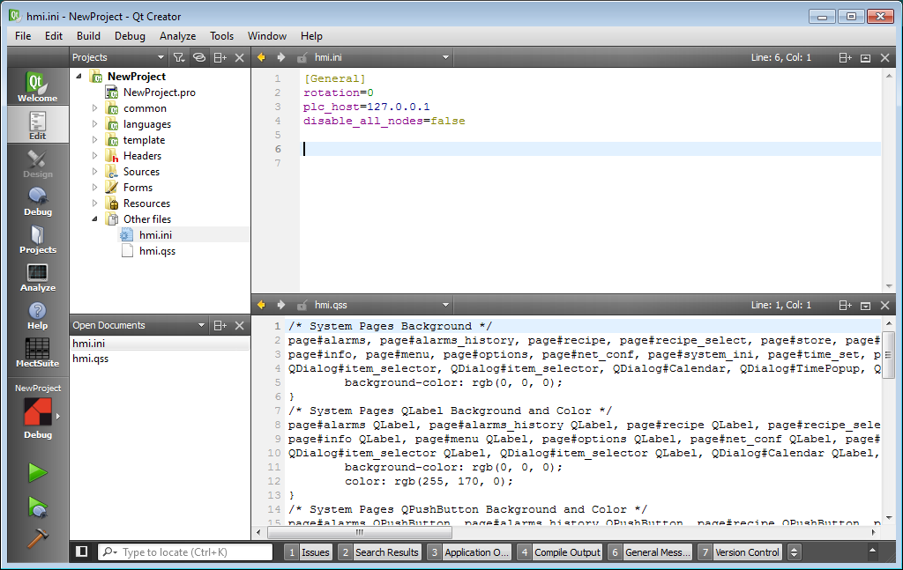

Con la versione 3.4.x per i nuovi progetti sono stati aggiunti due nuovi file, hmi.ini e hmi.qss, raggruppati nella nuova sezione “Other files”.

Il file hmi.ini è un file di testo in formato “Windows Ini Format”, organizzato in Sezioni (titoli racchiusi da []) e coppie Chiave=Valore
[General] rotation=0 plc_host=127.0.0.1 disable_all_nodes=false
Il file hmi.ini viene automaticamente copiato durante il deploy nella stessa cartella dell’applicazione. Il suo path sul target è /local/root/hmi.ini.
All’avvio il programma hmi leggerà nella sezione [General] la chiave “disable_all_nodes”, e se il valore è impostato a true non verranno attivati automaticamente i nodi remoti definiti nell’applicazione.
Il valore di default è false per non modificare il comportamento delle applicazioni esistenti.
E’ quindi ora possibile definire in Crosstable configurazioni complesse ed attivare nel codice cpp, in funzione della configurazione presente sul terminale, solo i nodi remoti necessari, con l’istruzione:
doWrite_NODE_xx_STATUS(1);
Il file hmi.ini potrà essere utilizzato per memorizzare altre impostazioni dell’applicazione, meglio se utilizzando sezioni diverse da
[General], ad esempio:
[mySession] myKey=myValue
Per leggere il valore della chiave myKey nella sezione mySession è sufficiente, nel codice cpp:
#include<QSettings>
QSettings hmi_ini("/local/root/hmi.ini", QSettings::IniFormat);
QString myValue = hmi_ini.value("mySession/myKey").toString()
Il file hmi.qss è un file di testo in formato “Qt Style Sheet” (simile ad HTML Cascading Style Sheet CSS).
Il file hmi.qss viene automaticamente copiato durante il deploy nella stessa cartella dell’applicazione. Il suo path sul target è /local/root/hmi.qss.
All’avvio il programma hmi leggerà (se esiste) nella funzione main il file “hmi.qss” e interpreterà le direttive al suo interno a tutti gli oggetti dell’applicazione, eseguendo questo codice (in libreria):
// Loading Application QSS
QFile fileQSS(“/local/root/hmi.qss”);
if (fileQSS.exists()) {
fileQSS.open(QFile::ReadOnly);
QString styleSheet = QString(fileQSS.readAll());
fileQSS.close();
app.setStyleSheet(styleSheet);
qDebug(“Loaded hmi.qss”);
}
Per essere efficace quest’operazione deve essere eseguita prima che vengano creati gli oggetti grafici dell’applicazione (pagine utente e di sistema).
Se il file non esiste, è vuoto od ha contenuti non validi sarà ignorato.
Il file fornito nei nuovi progetti è piuttosto complesso, perchè è pensato per modificare solo le pagine di libreria e non avere effetti sull’applicazione sviluppata dall’utente, definendo una sorta di “Dark Theme” per le pagine di libreria.
All’utente è lasciata la possibilità di aggiungere nuove direttive QSS per le proprie pagine o modificare quelle esistenti per uniformare l’aspetto finale del progetto.
Per maggiori informazioni si rimanda a: https://doc.qt.io/archives/qt-4.8/stylesheet-examples.html#style-sheet-usage
Per le nuove applicazioni è stato modificato il file automation.cpp:
A causa delle ottimizzazioni della fase di avvio dei device e delle modifiche del protocollo interno di comunicazione tra PLC e hmi, introdotte con la versione 3.3.8 di Mect Suite, nella funzione setup() di automation.cpp è stato introdotto un loop di attesa che la variabile di sistema PLC_EngineStatus raggiunga il valore 2 (enRunning)
/* put here the initalization */
void setup(void)
{
// Wait PLC Engine gets ready
while (PLC_EngineStatus < 2) {
fputc('*', stderr);
sleep(1);
}
// Insert your start-up code here
// .....
}
Con valori inferiori (enIdle = 0, enInitialized) non è garantita la comunicazione tra HMI e PLC e non è possibile leggere o impostare valori affidabili per le variabili di Crosstable.
Pertanto decisioni basate sui valori di variabili di Crosstable o impostazioni di nuovi valori devono avvenire dopo questo loop di attesa.